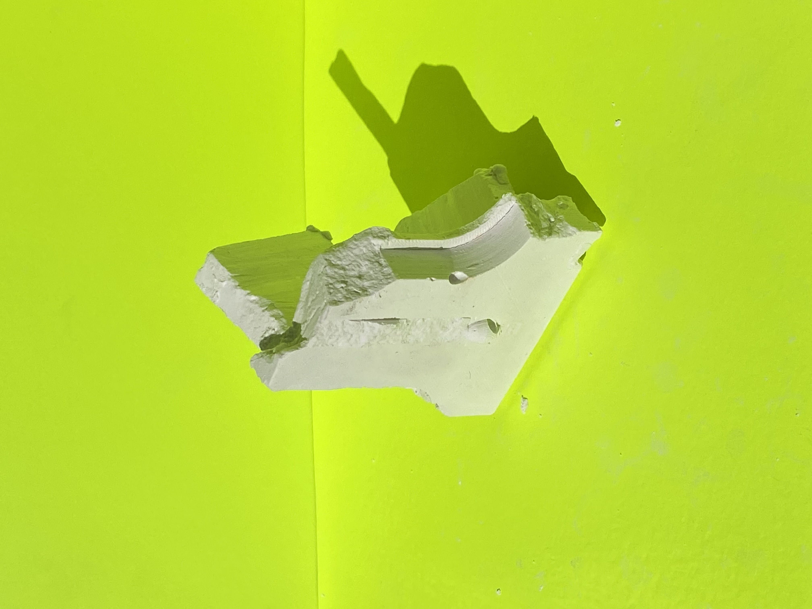
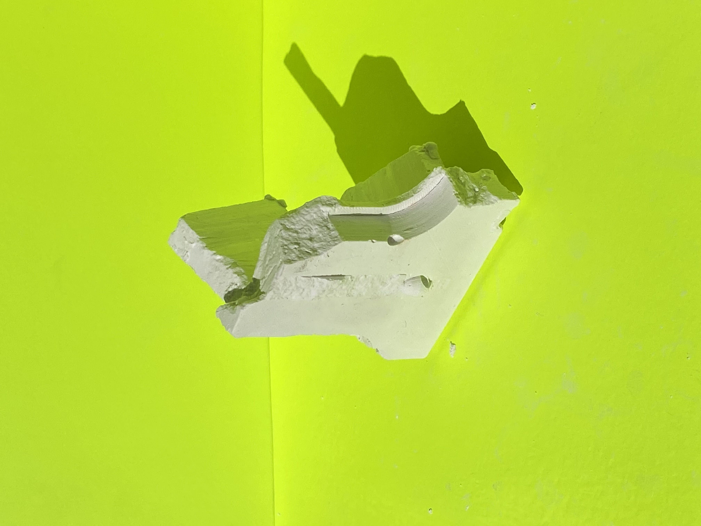
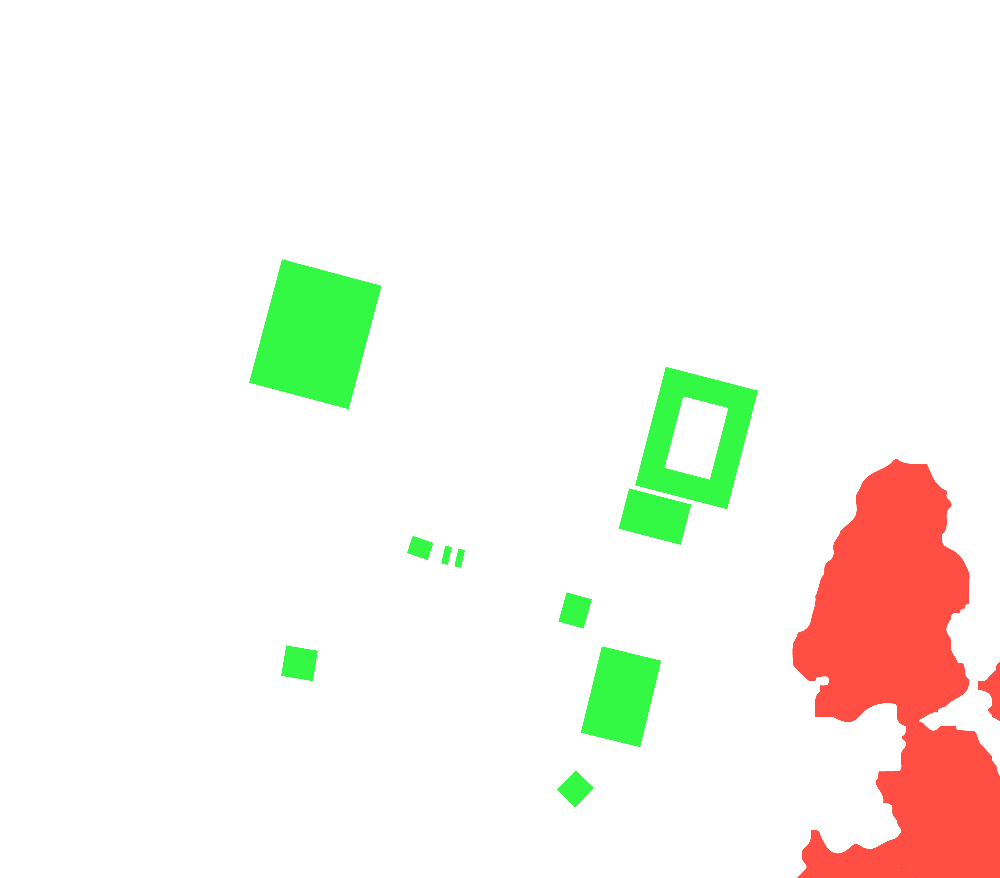
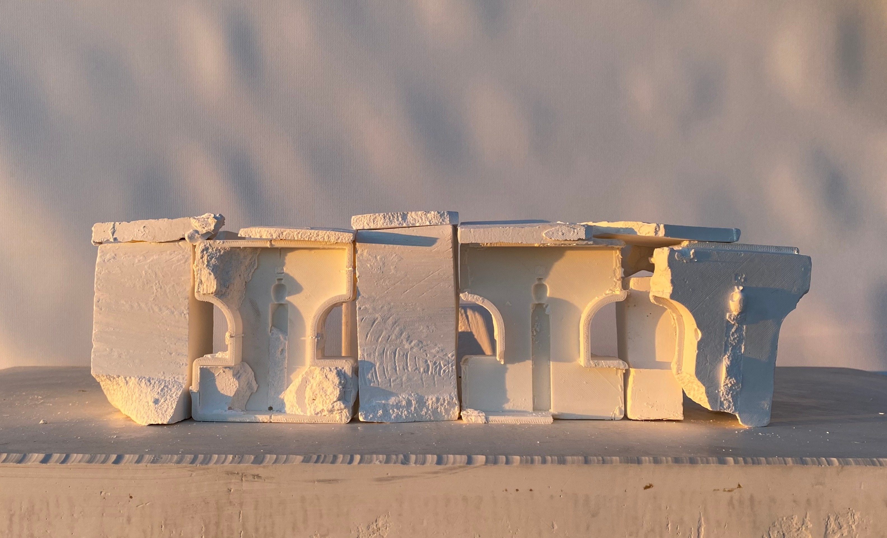
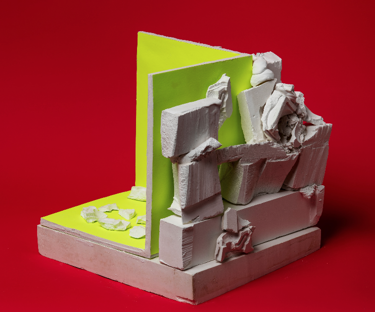
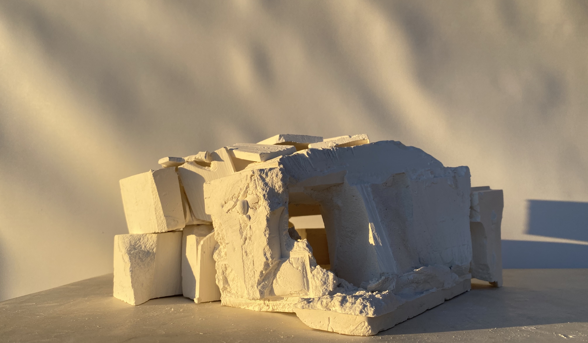
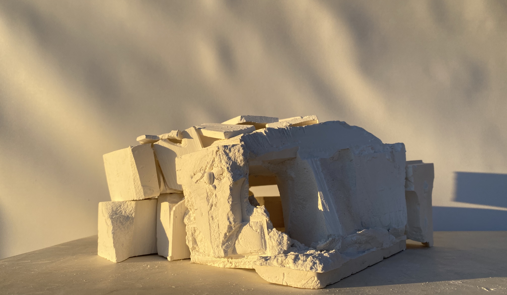
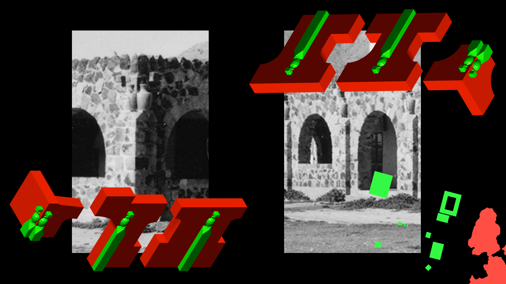
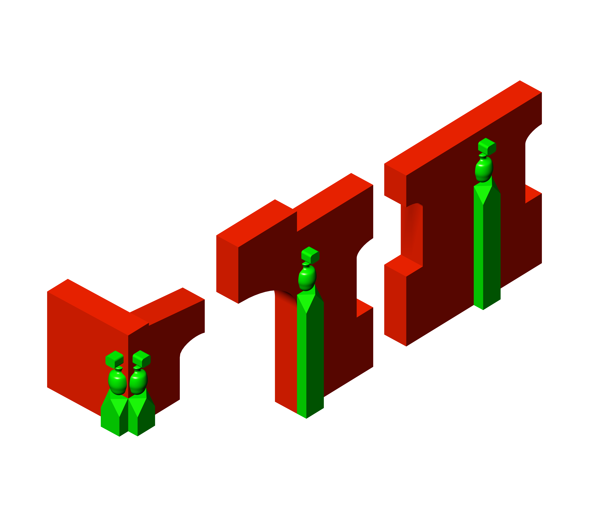

TWITCH
ABOUT
Sacred Lands, health resort, naval test station, the contingent identities surrounding the Coso Volcanic Range are in a constant state of entropy and fossilization. Tremulous formations and management agencies facilitate the stage for spiritual cleansing, material extraction, and place-making.
This thesis proposes an architecture that takes on performance based operations found in the art and tectonic practices of repairing and reusing broken and derelict ceramic parts: at the scale of a vessel (such as in Kintsugi); and at the scale of a building (such as in Spolia). These processes were folded into scenographic performances undertaken by myself in two ways: 1/ molding and casting; 2/ 3D scanning and imaging. These performances are a series of visual and material experiments; a method for recycling, and re-identifying existing ruins on a chosen site in Coso Valley.
Although the site is off limits to the public, documentary scenes of the hot springs (archival film, 1930, Somewhere on the Edge of Nowhere, 2005, Talking Stone, Rock Art of the Cosos, 2014) were collected and interpolated as forensic data and topographical evidence. By extracting and compositing archival postcards, documentary sequences, USGS Lidar scans, the resulting scenography is a superimposition of history with materiality; an extraction of an atmospheric yet tactile terrain.
MUDPOT
 

BATHHOUSE
 
INFORMAL
HEARTH


FOLLY
 

RECONSTRUCTION
 